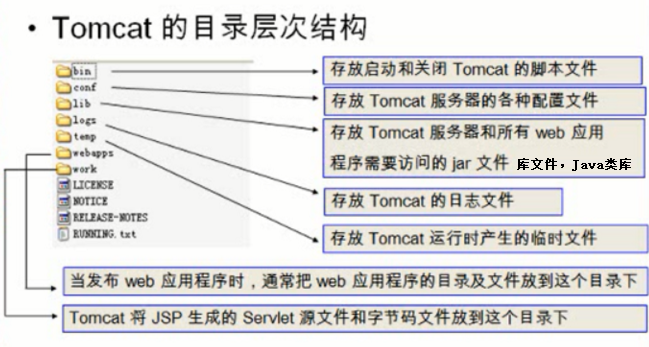

tomcat配置
rpm包安装的程序环境：
配置文件目录：/etc/tomcat
主配置文件：server.xml
工作目录：/usr/share/tomcat/
webapps存放位置：/var/lib/tomcat/webapps/
ROOT：/(根目录)
index.jsp：主页；
WEB-INF/：当前webapp的私有资源路径；通常用于存储当前webapp的web.xml和context.xml配置文件；
META-INF/：类似于WEB-INF/；
classes/：类文件，当前webapp所提供的类；
lib/：类文件，当前webapp所提供的类，被打包为jar格式
docs
examples
host-manager
manager
Unit File：tomcat.service
环境配置文件：/etc/sysconfig/tomcat
webapp归档格式：
.war：webapp
.jar：EJB的类打包文件；
.rar：资源适配器类打包文件；
.ear：企业级webapp；
二进制tomcat的目录结构

tomcat的配置文件构成：
server.xml：主配置文件；
web.xml：每个webapp只有“部署”后才能被访问，它的部署方式通常由web.xml进行定义，其存放位置为WEB-INF/目录中；此文件为所有的webapps提供默认部署相关的配置；
context.xml：每个webapp都可以专用的配置文件，它通常由专用的配置文件context.xml来定义，其存放位置为WEB-INF/目录中；此文件为所有的webapps提供默认配置；
tomcat-users.xml：用户认证的账号和密码文件；
catalina.policy：当使用-security选项启动tomcat时，用于为tomcat设置安全策略
catalina.properties：Java属性的定义文件，用于设定类加载器路径，以及一些与JVM调优相关参数；
logging.properties：日志系统相关的配置； log4j
tomcat的两个管理应用:
manager：管理webapps应用程序
host-manager：管理虚拟主机
tomcat的常用组件配置
Tomcat的核心组件：server.xml
每一个组件都由一个Java“类”实现，这些组件大体可分为以下几个类型：
顶级组件：Server
服务类组件：Service
连接器组件：http, https, ajp（apache jserv protocol）
容器类：Engine, Host, Context
被嵌套类：valve, logger, realm, loader, manager, ...
集群类组件：listener, cluster, ...
server.xml文件的结构
服务类组件配置信息
1 | <Service name="Catalina"> |
<Server>:代表tomcat instance，即表现出的一个java进程；监听在8005端口，只接收“SHUTDOWN”。各server监听的端口不能相同，因此，在同一物理主机启动多个实例时，需要修改其监听端口为不同的端口；
<Service>:用于实现将一个或多个connector组件关联至一个engine组件；
<Connector>:负责接收请求，常见的有三类连接器http/https/ajp；
定义连接器时可以配置的属性非常多，但通常定义HTTP连接器时必须定义的属性只有“port”，定义AJP连接器时必须定义的属性只有"protocol"，因为默认的协议为HTTP
常用属性：
address：监听的IP地址；默认为本机所有可用地址；即0.0.0.0；
maxThreads：最大并发连接数，默认为200；
enableLookups：是否启用DNS查询功能；
acceptCount：等待队列的最大长度；
enableLookups：是否通过request.getRemoteHost()进行DNS查询以获取客户端的主机名；默认为true
redirectPort：如果某连接器支持的协议是HTTP，当接收客户端发来的HTTPS请求时，则转发至此属性定义的端口
secure：
sslProtocol：
port：
connectionTimeout：等待客户端发送请求的超时时间，单位为毫秒，默认为60000
<Engine>:Servlet实例，即servlet引擎，其内部可以一个或多个host组件来定义站点； 通常需要通过defaultHost属性来定义默认的虚拟主机；
<Host>:位于engine内部,接收请求并处理相应请求的主机一般都是基于主机名，可以有多个主机
属性：
(1) appBase：此Host的webapps的默认存放目录，指存放非归档的web应用程序的目录或归档的WAR文件目录路径；
可以使用基于$CATALINA_BASE变量所定义的路径的相对路径；
(2) autoDeploy：在Tomcat处于运行状态时，将某webapp放置于appBase所定义的目录中时，是否自动将其部署至tomcat；
(3) unpackWARs="true" 自动展开war文件
<Context path="/PATH" docBase="/PATH/TO/SOMEDIR" reloadable=""/>
docBase的路径相对于appBase的路径
<Valve>存在多种类型：
定义访问日志：[org.apache.catalina.valves.AccessLogValve](https://tomcat.apache.org/tomcat-7.0-doc/api/org/apache/catalina/valves/AccessLogValve.html)
定义访问控制：org.apache.catalina.valves.RemoteAddrValve
示例：
1 | <Host name="www.a.com" appBase="webapps" |
综合示例：
自定义默认网站目录
1 | <Host name="www.a.com" appBase="/web/apps" unpackWARs="true" |
修改配置文件后，要重启服务